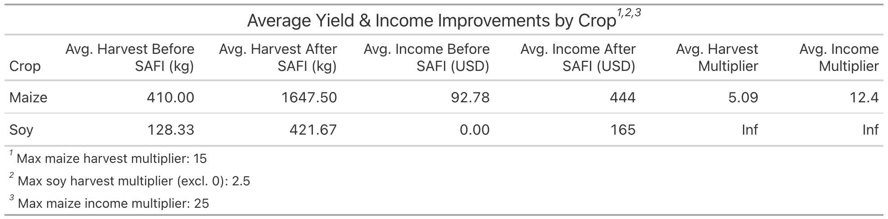
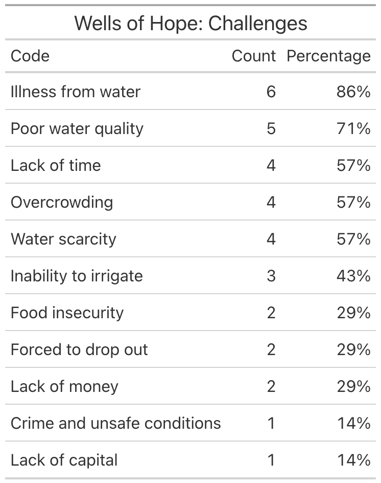

SAFI: Assessing Family and Community Impact
Executive Summary
SAFI, or School of Agriculture for Family Independence, is a non-profit organization based in Lilongwe, Malawi. Following a devastating famine, SAFI was started in 2002 as a sustainable solution to widespread food insecurity. Since then, SAFI has helped thousands of Malawians achieve food security and make progress across a range of other critical aspects of life. SAFI focuses on providing skills and knowledge that will help their beneficiaries make lasting change in their lives, solving problems at their root.
This report outlines the transformative reach of three of SAFI’s most impactful programs—Self-Reliance, Educate the Children, and Wells of Hope—through firsthand interviews and on-site data collection. The stories of 48 beneficiaries, reflected in the data in this report, reveal how these interventions extend outward, lifting families and transforming entire communities. Behind every statistic is a story of growth, hope, and sustainable change.
Program impact overview
Self-Reliance
SAFI’s Self-Reliance Program empowers rural Malawian families through intensive agricultural training and leadership development. The program teaches modern farming techniques, business skills, family relations, and gender equity—with the ultimate goal of increasing crop yields, income, and household stability.
Each year, SAFI selects a cohort of students from across Malawi to participate in their training programs at the SAFI campus in Mtalimanja. Depending on the program, students spend between two weeks and six months on campus, where they receive hands-on instruction from experts in crop science, livestock care, nutrition and business management. Students participating in the year-long program are given a plot of land on which to cultivate their crops over the period of six months, allowing them the opportunity to practice in real time. After being trained on campus, the students return home to begin applying and sharing their knowledge in their local communities.
A key innovation of the program is the Lead Farmer Model. Upon returning home, the graduates train and mentor anywhere from 15 to 100 “follower farmers.” This peer-to-peer approach dramatically increases SAFI’s reach and the impact of the program: a cohort of 40 lead farmers can directly impact thousands of rural farmers across the country.
The impact of SAFI’s self-reliance program can be seen through both quantitative and qualitative data. The following table and graphs show the increase in both harvest and income reported by beneficiaries:
Quantitative Impact
SAFI’s Self-Reliance program shows measurable improvements in both economic and agricultural development. The following table shows the average gains reported by both lead farmers and follower farmers in terms of harvest and income increase.

Key Findings:
Average maize harvested by beneficiaries increased by over 5x.
Yearly household income increased by an average of over 12x.
Farmers previously making no money from soy produce were able to make an average of $165 per year.
While these numbers may seem small, keep in mind that the average GDP per capita in Malawi was just /$602 in 2022, ranking 179th out of 194 countries in the world (Macrotrends, 2024).
In the following graphs, we see this data visualized:

.png)
Qualitative Impact
During interviews, beneficiaries from the Self-Reliance program overwhelmingly described improvements in economic security, food availability, and household well-being. Reported outcomes include:
Increased food security (56%)
Improved nutrition (48%)
Greater community cohesion and growth (32%)
When asked how they used their increased income, participants reported:
Covering basic household needs (56%)
Starting or expanding small businesses (56%)
Improving household infrastructure (bathrooms, kitchens, housing) (52%)
Investing in livestock (48%)
Sending more children to school (%24)
Gaining personal independence and confidence
The following table gives a more detailed breakdown of the development markers:

These findings highlight that SAFI’s Self-Reliance program goes far beyond agricultural training. By investing in a small group of students and equipping them to become change agents in their communities, SAFI fosters sustainable growth in health, education, economic resilience, and social equity. This multiplier effect ensures that each dollar invested yields far-reaching and lasting results.
All this data is encouraging, but stories from the beneficiaries themselves make the impact much more personal:
Beneficiary stories
> Charity Gausi - A Family Transformed
Charity Gausi is a 32-year-old single mother, living in the village of Chikunthu. Few would guess that because of her help, the community has grown from facing huge challenges to welcoming even bigger opportunity. Chosen to head out the SAFI initiatives of self-reliance, Charity participated in a two-week course at SAFI campus to learn livestock management, agroforesty, family relations, modernized farming, and backyard garden techniques. Soon after returning home, she started not only implementing these programs, but teaching 15 other families to do the same.
Before being approached by SAFI, Charity and her young daughter were facing food insecurity and low crop yield. Struggling to get a leg up, Charity was lacking the knowledge and skill necessary to take her limited resources and reach success. Nowadays, Charity has taken her harvest from three bags of maize to 22—more than a 7x increase. On top of this, she has multiplied her income by a factor of ten, now making around MWK 700,000 a year thanks to her small business endeavors.
Of all the students of Charity’s, each one now has a backyard garden to source their own vegetables, sells the surplus of their crops, and has invested in livestock. One student sticks out in particular though—Charity’s mother, Grace. Since learning the new techniques from SAFI, Grace has doubled her income and expanded her livestock investments. She no longer struggles to find food, and can support all her children and their basic needs. With all this prosperity, Grace’s household has become a happier, more stable environment. “Without money, we quarreled. Now, we work together and are happy,” she says. In the future, Grace hopes to one day buy a car to get around, now that her age is affecting her joints. “Thank you SAFI for what you have done in my family and my community. Other communities need to benefit like we have. I’m so grateful for what SAFI does!” We share the same sentiment. The family and community impact of SAFI’s simple programs has effects that ripple across generations, changing families, communities, and the beautiful country of Malawi.

> Johannes and Gloria Phiri - Role Models for a Struggling Community
In 2023, SAFI visited the village of Chukozo, looking to find participants for their one-week self-reliance program. After speaking with the village chief, Johannes Phiri was chosen to fill the role. He would go to SAFI campus for one week to learn modernized farming techniques, business management, agroforestry, and fruit cultivation skills that he could then bring back to his village and teach others to implement. Currently, he leads 42 other farmers in the village, teaching them the about the skills SAFI has given him to increase his harvest and make his farm sustainable. “We were only getting maybe half a bag of soybeans, for example, but now we are able to get seven, eight bags of soybeans. The maize, we used to harvest 2-3 bags before, but now we’re able to get 60 bags.” Johannes says. With this increase, Johannes and his wife have multiplied their income, making MWK 1.5 million from selling the surplus from last year’s harvest. Visiting the farm, you can see the impact that this program has had. With the extra money, the family has invested in more livestock, rebuilt their house, bought more land—they no longer go hungry at any point in the year. Every square inch of their property is covered with trees, flowers, or crops. Johannes mentioned that one of his sons has taken up the new farming techniques, now selling a surplus and producing enough to feed his family reliably. As for the community, Johannes says that much has changed. Because of the food insecurity, theft of crops was very common. Now that Johannes has helped so many farmers to start backyard gardens, there is no longer any need to steal. The village is a safer, better nourished community. Many fellow farmers have followed in Johannes’ footsteps, making great strides in their economic progress. In the future, Johannes and Gloria hope to build a better house, start a commercial farm, and raise more livestock.

Educate the Children
SAFI’s Educate the Children program focuses on paying the school fees of children and young adults in need, allowing them crucial educational opportunities that they would otherwise not be able to pursue. Only about 15% of children complete secondary school due to high school fees and material costs. This number is even lower in rural areas, ranging between 2-10% completion in poor sectors (Molendijk, 2022).
As of now, SAFI sponsors about 250 students in total: 150 secondary school students and 100 university students all across the country. SAFI recruits students through an application process: students or their parents apply for the scholarship and applicants are selected for interviews. Students are selected based on individual need and potential for success. Depending on the circumstances, SAFI pays for tuition, accommodations, health-care costs, and food. Eight-nine dollars educates a secondary school student for an entire year. For a university student, the annual cost is $492 USD.
The following table shows the frequency of certain challenges faced by students before receiving the scholarship:

Key Findings:
79% of students said they would have dropped out without SAFI’s help.
86% reported a lack of school fees, restricting them from attending class and accessing necessary supplies.
Many of these problems stem from greater social and economic issues in the country of Malawi. However, SAFI’s Educate the Children program proves effective in improving these problems and others.
When asked what benefits the students had seen in their lives after receiving the scholarship, here were their answers:

Key Findings:
57% reported decreased financial stress.
50% reported higher employment and future education opportunities.
Multiple students reported feeling happier and more hopeful about their lives.
In terms of school performance, students reported higher grades, increased participation in class, and better study habits.
This table also highlights the expansive impacts that this program has had on families and communities:
At least 57% of sponsored students are the first in their families to become educated.
64% of students reported seeing positive impact on their family members: in some cases more stability for younger siblings, as well as a positive impact on future generations Others reported hoping to pay school fees for their future children or even using their education to become teachers themselves.
36% mentioned becoming role models for their communities.
86% expressed the desire to use their education to serve those in need, with some students mentioning hopes of opening clinics and hospitals or charity organizations.
The following students exemplify perfectly the impact of SAFI’s Educate the Children program and its extended impact on communities and families:
Beneficiary stories
> Thomas Mwale — a Duty to Serve
Thomas Mwale is a 42-year-old father of four—not one many would expect to be studying at university. Eight years ago, Thomas was a working professional struggling to pay for the needs of his family, like many people in Malawi. He had dreams of serving the needy and pursuing his passion of helping others. He enrolled in university courses studying social work, but was unable to continue due to the tuition cost. Facing the threat of dropping out but wanting to pursue his dreams, he was presented with the opportunity to continue studying through SAFI’s Educate the Children program. His dreams were back in the realm of possibility, and Thomas took that possibility and ran with it. Supported by SAFI, Thomas finished his degree in four years. Since then, he has dedicated his life to seeking out vulnerable students in rural villages—those unlikely to be able to become educated, such as children of poor farmers, orphans, and the sick or handicapped. Working within those communities, Thomas has been able to identify these children, monitor their progress, and connect them with the necessary support, such as health care and adoption programs. In connection with the very program that supported his education, Thomas has provided scholarships to over one hundred students. “I feel happy to see the kids succeed. Some of them I found when they were seven or eight, now they’re completing university,” says Thomas. But Thomas doesn’t plan on stopping there. We met him at the Malawi College of Medical Science, where he is working towards his certificate in public health. Soon after, he plans on opening a hospital that specifically serves children under five—the first of its kind in Malawi. “I see the challenges that children face, and I have to help. The possibilities in the future of these children is great, they just need some support.” Without the SAFI’s support of one student, Thomas, hundreds of children in Malawi would have been denied the opportunity to succeed and make a difference. “The knowledge I have gained from school, I can communicate to those in need. Without SAFI, I wouldn’t have the training necessary to bring growth to the needy. We have to continue helping needy students. I myself have benefitted, and many have benefitted because of me. If SAFI didn’t support me, these kids wouldn’t have had a chance.” Continued support to the Educate the Children program doesn’t just help individuals—families and communities grow and progress, leading the nation to prosperity through the simple act of paying school fees.

> Massa Chunga — From Struggle to Service
Massa Chunga is a first year student at the Malawi College of Health Science. Starting last week, he is adjusting to his new life in Lilongwe. Massa is from a small village called Madisi, very close to SAFI campus in the district of Dowa. Massa was raised by his godfather after both of his parents passed away, and is the first member of his family to pursue a college education. Upon finishing his education, he will be the first in his community to become a doctor. Massa became aware of the difficulties that many of his friends and family face daily in trying to receive adequate medical care—there is no public hospital in the village of Madisi, and very few could pay the expenses of private clinics. This inspired Massa to want to become a doctor and help his community by opening a clinic and offering free services to those who cannot afford care. Massa commented that most people who become doctors in Malawi stay in the capital of Lilongwe because of higher salaries. He didn’t seem swayed by this, staying true to his motivation to help the poor.
Up until now, Massa has been unable to pay the MK400,000 ($228 USD) per semester tuition to start his education. For the past eight years, Massa has tried and failed to come up with the money. Massa still faces challenges, walking everyday for two hours to reach campus. He still lacks basic needs, often coming to school without enough food. These things make it difficult, but his determination to his dream wouldn’t let him quit. He has overcome many challenges up to this point and refuses to give up. Now, SAFI pays his tuition and supplies him with a small stipend to continue studying. Massa is grateful to SAFI for allowing him the opportunity to pursue his dreams of serving the poor and needy.

Wells of Hope
SAFI’s Wells of Hope program addresses critical water access challenges in Malawi’s underserved rural communities by drilling boreholes—deep, low-maintenance wells that provide reliable, clean drinking water. Working in partnership with government agencies, SAFI identifies the regions most in need based on access, functionality, and travel time to water sources.
Although 67% of Malawians have access to drinking water, rural communities lag behind, with 37% still using unsafe, unreliable water sources—over a third walking 30 minutes or more for water (UNICEF Malawi, 2024). Much of the rural population uses shallow wells or river water, which disproportionately impacts women and children, who often bear the burden of water collection.
The following table shows the frequency of certain challenges faced by both beneficiaries of the program and those in the process of receiving a borehole from SAFI:

Key Findings:
86% of participants reported getting sick from unsafe water sources.
71% reported poor water quality and cleanliness from alternative water sources.
Community wide problems such as crime, overcrowding, and water scarcity are common.
Since 2016, SAFI has drilled 169 boreholes all across Malawi, giving reliable water to a total of over 20,000 people. At an average cost of just $4,995, each borehole transforms the lives of an entire community. By improving access to nearby clean water, the Wells of Hope program not only reduces time and physical strain but also improves child health and well-being while enabling families to spend more time and energy investing in their education, agriculture, and small businesses.
But the impact goes far beyond water. As shown in the following table, beneficiaries report wide-ranging improvements in health, safety, nutrition, and community well-being—evidence of the massive impact just one borehole can have.

Key Findings:
100% of borehole beneficiaries reported better water access.
75% of borehole beneficiaries reported increased health and cleanliness.
50% of borehole beneficiaries were able to better develop their homes, expand their livestock, and had sufficient water for all their needs.
Community and family impact markers such as food security, increased gender equality, increased happiness, school participation, and higher levels of safety were all reported.
Beneficiary stories
> Yohane Village, Mchinji District
Arriving to the village of Yohane in the district of Mnchinji, you will be greeted by happy faces and voices singing welcome songs. The village is bustling with life. This hasn’t always been the case—before SAFI arrived in 2022 to build a borehole, many members faced the insurmountable problem of water insecurity. Well water is often the only solution—but it hardly is one. Women in the village used to spend hours daily walking to a shallow well nearby, only to wait in overcrowded lines to be using unsafe water. Many people suffered from diarrhea and other illnesses when relying on the untreated well water. All this changed however, when the village leaders were approached in 2022 to become SAFI beneficiaries. Initially, SAFI hoped to start their self-reliance program, teaching people to become independent farmers with access to enough food. This proved a challenge however, when they realized that doing so would be impossible without a reliable source of water. “We proposed that they teach us how to construct a backyard garden, but we don’t have enough water. They told us it was more important that we drill a borehole, so we proposed that to them,” says the village’s lead farmer.
Nowadays, water can be readily retrieved by just walking a few minutes. The people have enough water for anything they need, and have seen numerous improvements in their families and communities. Before, many children were unable to go to school as their mothers couldn’t fetch enough water to bathe them, wash their clothes, or cook for them. Many students dropped out of school because of these challenges.After the borehole has been drilled, the students have been able to return to school. Their parents, with the newfound time, have built gardens, irrigate their crops, and supply the basic needs for their homes. Village members rotate cleaning duties and pay to supply parts and maintenance, in order to keep things running smoothly.
The peace of mind afforded to hundreds of people in Yohane is priceless. The benefits of the borehole extend much beyond just water—the village is alive, and will continue to prosper. “We only thank SAFI for drilling the borehole, because now we are so safe. We drink clean water as I said, we construct backyard gardens and find food easily. We just thank SAFI for drilling the borehole, all of our problems have been solved!”


> Sunduza Village, Kasungu District
Filimoni Mtalimanja is the lead farmer of Sunduza, chosen by his village chief to teach other members of the village about SAFI’s life-changing interventions. There was only one problem—the village depended on shallow, hand-dug wells from the nearby river. Village members, mostly women, would spend hours walking to the river to retrieve water, only to get sick from drinking it.
All of this changed last November when SAFI drilled a borehole to support the members in their adoption of the self-reliance programs. “Since the borehole was installed, we are healthier, there is a reduction in diarrhea cases. Women no longer have to travel at night to collect water, and are free from danger,” Filimoni says. Beyond that, the people now have more time and energy to develop their homes and village. With extra water to irrigate his backyard garden, Filimoni has made enough profit to buy an oxcart. “The collective development of the village, I see through my own home,” he says. Many members of the village have followed Filimoni’s lead, implementing important agricultural techniques that he learned through SAFI. In the future, he hopes to see livestock and small business growth, as well as better quality of life in his home.
Filimoni says, “I commend SAFI for what they have done in our community. It has given us agricultural knowledge, sanitation, it has also given us the borehole which has changed a lot of things in the community. I ask that SAFI do this for more communities in this country.”


Conclusion
SAFI’s Self-Reliance, Educate the Children, and Wells of Hope programs have transformed thousands of lives across Malawi. Each initiative has delivered remarkable, measurable outcomes—increased crop yields, full-tuition scholarships, and reliable access to clean water. These results alone are worth celebrating. But the true impact reaches much deeper. This is only a fraction of the story though. As participants and community members consistently share, SAFI’s work empowers families and uplifts entire communities. Children are returning to school. Families are feeding themselves year-round. Women are leading agricultural efforts and small businesses. Villages once defined by scarcity are now building futures with confidence and hope.
This is not just aid—it’s lasting change. And with increased support, SAFI can do even more.
Your partnership enables SAFI to expand its reach, deepen its programs, and serve more families with the tools they need to break cycles of poverty. Every donation directly fuels transformation—one family, one community, one future at a time.
Contact Us
If you would like to learn more about SAFI’s programs or explore partnership opportunities, we’d love to hear from you.
Email: info@safimw.org
WhatsApp: +265 889 830 777
Website: safimw.org
Facebook: facebook.com/safimalawi.org